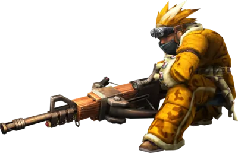
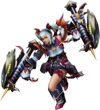
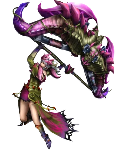
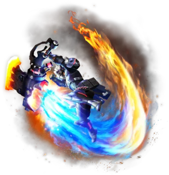

An Introduction to the 14 Weapons of Monster Hunter
Monster Hunter is a video game series created by the developer and publisher Capcom. It is a robust action rpg where you as the hunter must slay otherworldy monsters width your choice of 14* different types of weapons. In this artcile you will learn about each one and what makes it special.
See each weapon below:
Greatsword

The Greatsword is the high risk high reward weapon of the series. It focuses on slow descisive hits that when successful result in massive damage numbers. It is the ideal weapon for those who enjoy taking it slow as they will surely have fun biding their time in preperation for unleashing the weighty hits of the true charge slash combo.
Longsword

The Longsword is the flowiest weapon of this game. It comes with many attacks that allow it to move around such as the fade slash. It also comes with attacks that counter the monster such as the foresight slash which allows you to add a level to your spirit gauge. When you have three spirit gauge levels, it is time to unleash the mighty spirit helm-breaker. This weapon is best for those who want to dance right through the monsters attaks.
Sword & Shield

The Sword and Shield is a weapon praised by both the newbies and the veterans of the series as it is a weapon that has a low skill floor and a high skill ceiling. It uses both the sword and the shield for attacking causing both slashing damage and blunt damage to be done to the monster. It has many bread and butter combos, but none are as revered as the shield bash and the perfect rush combos. This is a weapon that almsot anyone can pivk up and have a blast with.
Dual Blades

The Dual Blades are the weapon of speed in this game. If you can't sit still or don't want to wait for the monster to finish attacking to get your licks in then fear not for this is your weapon right here. The dual blades can enter their demon mode which makes you an extremely mobile blender of monster meat that is only held back by the drain on your stamina.
Hammer

The Hammer is the KO weapon of this game. It deals blunt damage which while good for breaking certain monster parts, it is best for giving the monster a concussion and sending it tumbling to the ground. The weapon hits hard plays harder. If you want to knock-out some behemoths with a rock on a stick, this is the weapon for you.
Hunting Horn

The Hunting Horn is the support weapon of this game. It uses songs to apply different buffs to you and your fellow hunters. Don't be fooled though. It might be considered a support weapon, but that is only true if you are playing with other people. If you are along it becomes a sonourus blunt baseball bat that KOs monsters like the hammer, but also fills with the power of its music.
Lance

The Lance is the weapon chosen by those that like to tank hits and send them right back. While its moveset might be underwhelming at first glance, it has some depth that many people don't get to see. It is the other main counter weapon of this game as it aborbs hits from the monster and throws it right back at its face every chance it gets. Pick this weapon if you like the idea of being an impenetrable wall.
Gunlance

The Gunlance is less gun and lance more like a lance with explosions coming out of the tip. This weapon can completely bypass the armor of a monster with its shelling and wyvernstake attacks. It is the best weapon if you love explosions as that is where it shines. Especially with the powerful full burst and wyvern fire attacks.
Switch Axe

The Switch Axe is one of the two morph weapons of this game. It switches between an axe and a sword. The axe mode is quite mobile and allows for quick attacks and swift rolls. The sword mode restricts your movment a bit more, but the tradeoff is heavenly flurries which charge the sword up to do its zero element discharge attack which causes you to latch onto the monsters and release the stored up energy into a massive explosion.
Charge Blade

The Charge Blade is the second morph weapon that was introduced into this game. It switches between a sword and shield and an axe. It uses the sword mode to charge up its five phials which can then be stored in the shield. Once you store the phials in the shield you can either switch into axe mode, savage axe mode, or you can release all the phials at once using the Ultra Amped Element Discharge attack which causes massive explosions in its wake.
Insect Glaive

The Insect Glaive straight up allows you to fly through the air. It uses an kinsect buddy to gather buffs from the monster which enhance the offense and defense of the weapon and even its moveset. This weapon is the ideal pick for those who like to think the floor is lava.
Light Bowgun

The Light Bowgun is the evasive little brother to the Heavy Bowgun. It shoots a myriad of different ammo types and can place mines down to shoot and cause them to explode. It is one of the most nimble weapons of the game with its slide reload and its ability to keep a strong distance from the monster. This weapon is best for those who like to stay at range from their enemy.
Heavy Bowgun

The Heavy Bowgun is the heavy hitting and slower older brother to Light Bowgun. Along with its many different ammo types, it can use two different types of special ammo. Some have the wyvern snipe ammo which allow for one massive piercing shot through the mosnter. Others have the wyvern heart ammo which turns your heavy bowgun into a machine gun.
Bow

The Bow allows you to essentially dance around the monster as you unload arrows upon it. This weapon is ideal for those who love to stay moving like the dual blades, but don't want to get nearly as close. Although your stamina will drain like crazy, you can remain untouchable by the monster if you play your cards right.
Medium Bowgun, Tonfas, Magnet Spike, and Accel Axe
   The Medium Bowgun, Tonfas, Magnet Spike, and Accel Axe are relics of the past at this point. They are no longer featured in the current generation of Monter Hunter games, but they desereved an honorable mention nonetheless.